LA FELICIDAD ES LA CLAVE DE LA VIDA
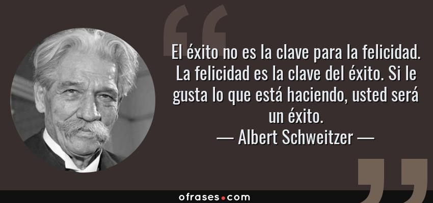Muchos de los grandes pensadores de la historia de la humanidad han intentado darle una explicación al sentido de la vida y el cómo esta hay que vivirla, cual es nuestro propósito especifico en esta pelota azul, que se encuentra flotando en un infinito mar oscuro y abismal que es el espacio sideral, somos en comparación a todo aquello se puede llegar a encontrar en ese vasto universo, una simple partícula microscópica en un gran e inmenso complejo de cosas. Aquí es donde entra un aspecto que es clave para que pueda nuestra vida tenga un sentido o una razón de ser. La felicidad, si logramos analizar, este sentimiento es un pilar importante para poder alcanzar un sentido de la vida ya que nuestra felicidad, en la mayoría de los casos, es la razón de nuestro existir, todos tenemos una razón diferente, ya que la individualidad nos hace humanos y, por consiguiente, nuestra felicidad la hayamos de diferentes maneras.
Ahora bien, aunque todos tengamos razones de existir diferentes, al menos un aspecto tenemos que si o si compartir, aunque sea ínfimo e insignificante, esa pequeña razón de existir colectiva es la que se tratará de hallar el día de hoy. A su vez esto nos va a permitir encontrar la clave de la felicidad humana, hasta incluso la clave de la felicidad general de todos los seres vivos de este planeta.
Un estado de grata satisfacción espiritual y física que puede experimentar un ser vivo es lo que técnicamente se puede denominar felicidad, eso quiere decirnos que siempre y cuando encontremos en algo satisfacción ya sea espiritual o física, lo podemos considerar felicidad. Esto considero que no es bueno en algunos casos, ya que una persona puede llegar a encontrar felicidad en la infelicidad y el sufrimiento de los demás, o en su propio sufrimiento, algunas personas se sienten felices haciéndose daño a sí mismas, ya sea físico o mental. La felicidad debemos encontrarla en cosas que no perjudiquen a nadie, ni siquiera a nosotros mismos, ya que, si nos perjudican, nos afectarán tarde o temprano en nuestra vida. Por eso es fundamental encontrar una fuente de gratificación en cosas que nos hagan bien a nuestro cuerpo, nuestro espíritu y nuestra mente. Una persona especial que nos valore y nos haga sentir bien, incluso hasta esa persona podemos ser nosotros mismo, ya que el amor propio es importantísimo para encontrar la felicidad, un hobbies o pasatiempo que haga que nuestra mente descanse o que nuestro cuerpo lo haga, un pensamiento que nos genere satisfacción pura, acciones que nos hagan sentir bien al realizarlas y que a su vez no afecten a los demás, el simple hecho de sentirnos felices por existir, entre otras formas sanas de encontrarnos felices. Es decir que, si nos hace bien y nos hace felices, debemos tenerlo en nuestra vida presente, pero si nos consume y nos hace mal a nuestra mente o nuestro cuerpo, lo mejor es dejar esas cosas y alejarlas de nuestra vida, ya que, si seguimos así, nunca seremos felices y viviremos carcomiendo nuestro ser poco a poco hasta que seamos consumidos por estas cosas malas y no podamos recuperarnos nunca más de ese vacío de maldad y tristeza.
"Yo como ser humano, aún no he encontrado una felicidad sana en mi vida, mis experiencias con respecto a estas fuentes no han sido muy buenas que digamos, he llegado hasta el punto de ser consumido emocionalmente y mentalmente por una de estas, lo bueno es que en un momento de reflexión acerca de lo que realmente importa en mi vida y el como yo soy lo más importante y mi salud es primordial, pude salir, claramente con ayuda de personas externas logré llegar a un punto neutro en el cual aún sigo buscando mi razón de vida y una felicidad, que muy probablemente, por no decir que en su totalidad, la voy a encontrar en mí mismo y el valor que yo me dé”
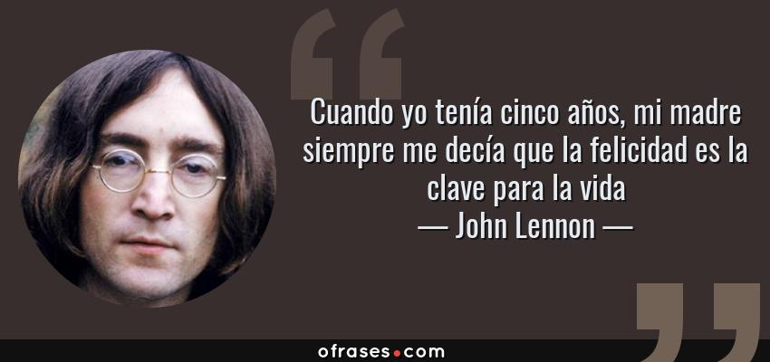Una persona empieza a vivir desde el momento en el cual esta sabe por su propia voluntad que está vivo y que se encuentra en la realidad, ya que momentos antes de esto, no sabemos realmente que pasa y que somos, ni siquiera cabe la posibilidad de que tengamos algo de conocimiento ya sea sobre nosotros mismos o sobre nuestro alrededor. Algunas personas consideran que todos nacemos con un propósito en esta vida, otras piensan que a lo largo de la vida vamos construyendo nuestro propósito, y ya otras postulan que no tenemos una razón de existir, que solo tenemos que vivir. Si pes damos cuenta, la teoría más coherente es la de que no tenemos una razón o un propósito, ya que hay personas que literalmente pasan toda su vida sin hacer algo relevante o centrados en una vocación que les llene o les complemente su vida.
Ahora acá es donde entra el sentido de la vida, el cual, puede que exista, y existe claramente, ya que todas las cosas en esta realidad tienen un sentido y una respuesta, aunque sean inexplicables, podemos llegar a decir que el sentido de la vida, es saber vivirla, aprovechar todos aquellos buenos momentos, vivir la vida al máximo, tomar riesgos, aprender y llenarnos de conocimiento, experimentar cosas nuevas, indagar y explorar, no vivir una rutina, aprovechar este mundo y esta vida al máximo, ya que vida solo hay una y hay que vivirla.
"En un momento de mi vida pensé que las cosas no tenían un sentido en realidad, que todo es un gran sinsentido que nos abruma y nos encasilla en una penuria eterna y un entendimiento total de las cosas, que la vida no tiene sentido alguno, que somos unos simples microbios en un organismo inmenso, que no valemos nada, que nuestra vida no es importante. Pero claramente es una gran mentira, nosotros somos importantes, solo que quienes nos deben dar esa importancia y los que podemos hacernos ver somos nosotros mismo, tenemos el control de nuestra vida y no debemos desperdiciar esa oportunidad que el universo nos da, la vida es una y hay que vivirla, y si no la sabemos vivir, nunca empezaremos a experimentar realmente lo que la vida es”.
En conclusión, la vida es algo hermoso, tenemos que aprovecharla, encontrar eso que nos hace felices realmente, que tarde o temprano llegará, no forzar su existencia, ya que el universo sabe cuándo darnos eso, vivir cada día como si fuera el ultimo y encontrar en nosotros mismos una razón para existir, que nos impulse a seguir adelante y que nos demuestre por qué la vida es algo importante y valioso. Es por eso que:
"La felicidad es la clave de la vida".
AUTOR: BRAYAN ACEVEDO
COMO VIVIR BIEN Y ALCANZAR LA FELICIDAD
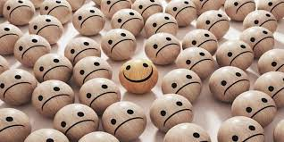Todos queremos ser más felices. Pero ¿Es posible ser más feliz? Es habitual que la mayoría de personas tengamos una lista mental de cosas que creemos que necesitamos para ser felices. Hay muchos aspectos externos que nuestra sociedad nos enseña a perseguir: éxito, riqueza, fama, poder, amor, etc. Pero ¿Son realmente las claves de la felicidad?
“El hombre que hace que todo lo que lleve a la felicidad dependa de él mismo, ya no de los demás, ha adoptado el mejor plan para vivir feliz”. Platón (427 a.C. - 347 a. C.) Se necesita mucho para ser feliz; sin embargo, llevamos bastante tiempo creyendo lo contrario. Decía Charles Dickens, un escritor inglés, que el truco está en no buscar la felicidad, en verla como ese regalo que desenvolvemos de vez en cuando. Ahora bien, asumir este tipo de enfoques idealistas nos aleja de la auténtica realidad. Porque, al fin y al cabo, esta dimensión se relaciona de manera directa con la salud mental. Es más, cuando nos señalan aquello de que la felicidad está en las pequeñas cosas del día a día resultará imposible verlas o apreciarlas si no estamos bien. Si en nuestro interior hay sufrimiento, el rumor de la angustia, el torbellino de la ansiedad o el peso de algún trauma. No importa que la vida nos dé motivos para estar felices; si en nuestro interior hay caos, lo que pase fuera carece de sentido.
De acuerdo con John Locke “Los hombres siempre olvidan que la felicidad es una disposición de la mente, no una condición dada por las circunstancias”. Es posible ser feliz en cualquier momento y lugar. El ingrediente secreto es nuestra actitud junto a la visión en perspectiva.
Feliz no es siempre el que más pertenencias tiene. Tampoco el que más amigos dispone. El auténtico bienestar se construye en el día a día a través de las siguientes dimensiones que son el cuidado de la autoestima, ya que necesitamos tomar consciencia de que es lo que nos hace daño, también trabajando por aquello que queremos y merecemos. Debemos tener en cuenta que hay que darle un significado a nuestra ida, hallar un sentido a lo que somos y a lo que vemos.
Hay que dominar el difícil arte de estar bien con uno mismo. Hay que saber quererse, ser capaz de luchar por lo que se quiere, aceptar los días malos cuando vienen, aprender de ellos y permitirnos disfrutar de los momentos buenos cuando llegan. Aunque esto no quita que estamos obligados a vivir circunstancias complejas, instantes en que las crisis y los problemas se abren bajo nosotros. Somos conscientes de que en ocasiones la felicidad parece más bien n ideal que una realidad. Sin embargo, esa dimensión tan reconfortante forma parte misma de la vida.
Ser feliz significa auto realizarse, alcanzar las metas propias de un ser humano. Aristóteles, discípulo de Platón, sostenía que todos los hombres perseguían la felicidad. Unos son felices ganando dinero; otros, recibiendo honores, y otros viajando. Cada cual posee el secreto de su propia felicidad. Pero para eso hay que conocerse bien a uno mismo, claro está, y saber qué se quiere.
Para ser felices y vivir bien, se necesitan muchas más cosas de las que pensamos. Hay que estar bien con uno mismo, quererse, ser capaz de luchar por lo que se quiere, aceptar los días malos cuando vienen, caer y saber levantarse una y diez veces.
AUTORA: KAROL DAYANA FLOREZ.
COMO VIVIR MEJOR Y ALCANZAR LA FELICIDAD
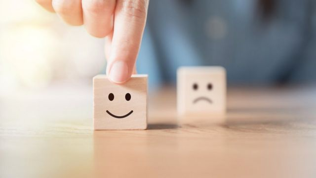En la filosofía podemos encontrar diversas posiciones sobre la felicidad, para algunos puede ser el desprendimiento de lo material en la tierra, pero para otros puede ser disfrutar de los placeres de la vida como tener una buena solvencia económica, disfrutar de esta, y también ser participe en la sociedad consumista en la cual diversifican la razón con la lógica, es decir disminuyen su valor que era tenido en cuenta hasta que comenzó la postmodernidad en la cual se dio el comienzo a el mercantilismo a gran escala, no infiero que este sea malo, infiero que este alude a acciones que van en contra de la razón, como lo es lo dionisiaco.
Teniendo en cuenta lo dicho anteriormente voy a presentar algunas frases las cuales hablan sobre la felicidad: - “No hay un camino a la felicidad: la felicidad es el camino” Buda Gautama, esta alusión nos habla de que cualquier acción por más pequeña que sea es la felicidad, es decir, al trazarnos una meta, al comenzar a realizar aquella meta, somos felices haciéndolo por más dificultad que esta requiera, es decir, en este caso sería felicidad subjetiva.
Otra frase reconocida es la del filósofo griego Sócrates el cual plantea: -“El secreto de la felicidad no se encuentra en la búsqueda de más, sino en el desarrollo de la capacidad para disfrutar menos”, esta frase nos explica de manera explicita que si no somos felices con lo que tenemos no seremos felices con lo que anhelamos o buscamos, esta frase puede ser vista de un punto de vista conformista, como también puede ser visto como un punto de vista para dar valor a todo lo que tenemos y disfrutar de esto sin añorar más de lo requerido.
También existe un planteamiento del filósofo Platón el cual nos habla del autoconocimiento del ser, es decir: -“El hombre que hace que todo lo que lleve a la felicidad dependa de él mismo, ya no de los demás ha adoptado el mejor plan para vivir feliz”, es decir, el hombre con alto grado de autonomía y autoconocimiento, no requiere de que su felicidad dependa de algún otra persona, es decir, el auto conocernos nos ayuda a restar importancia a opiniones contraproducentes de las demás personas, como decía Nike: -“Just do it”, es un claro ejemplo de que la validación de los demás no tiene importancia sino la del mismo ser.
Otro punto de vista subjetivo es el de la RAE, la Real Academia Española de la lengua nos infiere que la felicidad es un: -“Estado de grata satisfacción espiritual y física”, es decir, estar satisfechos con nosotros mismos, es decir con nuestra esencia que está relacionado con la autosatisfacción del ser en todos los ámbitos de la vida, el cómo actuamos, como nos sentimos, como tratamos a los demás sin importar su raza, su credo, su cultura, también la satisfacción por los pequeños logros personales y estar satisfechos de ello es la felicidad para la RAE.
Un punto de vista allegado a platón, maestro de Aristóteles es: - “La felicidad depende de nosotros mismos”, por lo tanto podemos dar inferencia de que esta frase nos explica de una manera racional de que la felicidad es subjetiva, cada persona tiene su criterio de felicidad, cualquier acción que nos haga felices es un motivo de felicidad, sin importar los demás.
Otro punto de vista clave es la felicidad para el filósofo Séneca, el cual nos habla de la felicidad subjetiva y la autosatisfacción del ser, la frase dice: - “Las grandes bendiciones de la humanidad están dentro de nosotros y a nuestro alcance. El sabio se contenta con su suerte, sea cual sea, sin desear lo que no tiene”, es decir, la felicidad está en la suerte que tengamos, sea cual sea la situación en la que estemos implicados, sin desear lo que no tenemos.
Algo apartado de el autoconomiento del ser es la obligación de ser felices, es decir, como decía Lao Tzu: - “Si estás deprimido, estás viviendo en el pasado. Si estás ansioso, estás viviendo en el futuro. Si estás en paz, estas viviendo en el presente”, en pocas palabras, - “El ayer es historia, el mañana es un misterio, pero el hoy es un obsequio, por eso se le llama presente, para que vivas, rías y cantes pero sobre todo que seas feliz”.
Para Kant la felicidad es un deber, por encima del deseo, es decir: - “La felicidad, más que un deseo , alegría o elección es un deber”
Para Nietzsche la felicidad es: -“Es el sentimiento de que el poder crece, de que una resistencia ha sido superada”, esta frase contradice todo lo anterior dicho, ¿por qué?, simplemente porqué nos habla del no conformismo del ser, sino la búsqueda de la superación de toda adversidad, es decir, no conformarnos con pasar esa adversidad y tratar de buscar la forma de ser felices en ella sino simple y sencillamente buscar solucionarla para así vivir felices.
Otro filosofo nos plantea el huir del dolor, como lo es John Stuart Mill que nos platea: - “He aprendido a buscar mi felicidad limitando mis deseos en vez de satisfacerlos”, es decir, en la sociedad mercantilista y consumista del siglo XXI nos plantea que debemos satisfacer todos nuestros deseos, consumiendo productos que son fabricados por grandes empresas, es decir, Stuart nos plantea todo lo contrario ya que nos dice que al limitar los deseos podemos lograr alcanzar la felicidad.
En conclusión, la felicidad es un planteamiento objetivo en la filosofía, pero es subjetivo en cada ser ya que al tener razonamientos diferentes inferimos lo que mejor se adapte con nosotros, para finalizar esta frase: - “La felicidad es como una mariposa, cuanto más la persigues, más te eludirá, pero si vuelves tu atención a otras cosas, vendrá y suavemente se posará en tu hombro”. Henry David Thoreau.
AUTOR: CAMILO ANDRÉS VELANDIA MENDOZA.
COMO VIVIR BIEN, VIVIR MEJOR, Y LOGRAR OBTENER LA FELICIDAD
Existen múltiples teorías sobre el buen vivir, distintos movimientos o corrientes que intentan explicar ¿qué es vivir bien? El hedonismo intenta explicarlo y aboga por una definición de buena vida como aquella en la que hay felicidad y ausencia de sufrimiento. Esta corriente fue defendida por Epicuro en la Grecia clásica, pero también en el siglo XVIII por Jeremy Bentham. Sin embargo hay que aclarar que el hedonismo defiende la felicidad a largo plazo, no como un simple encadenamiento de sensaciones placenteras momentáneas.
Todos estamos de acuerdo en que vivir bien es una sensación de bienestar y plenitud con ausencia del sufrimiento o de preocupaciones que puedan amargar nuestros sentimientos. Sin embargo, no podemos tomar una simple percepción o concepto del buen vivir debido a que es algo muy relativo, puede acarrear distintas corrientes debido a la visión del que intenta responder ante esta incógnita. De acuerdo con esto, la buena vida para cada uno consistiría en vivir de acuerdo con sus valores individuales. Esto no significa que no merezca la pena invertir el tiempo en esclarecer cuáles son estos valores.
“La alegría es a pesar de lo que hay, no merced a lo que hay" (Fernando Savater, 2013) Con estas palabras explicaba el filósofo Fernando Savater cuál es su visión de la alegría, algo que debe ser llevado con lo que tenemos, no con lo que esperamos tener en algún momento. Muchas personas en el mundo piensan que la felicidad se encuentra en el auto deportivo de último modelo o en las propiedades excesivamente costosas y llenas de lujos, ¿eso realmente es felicidad? ¿El dinero realmente puede llenar el vacío emocional de las personas y hacer que vivan más felices? Este pensamiento buscando las riquezas es muy simple y burdo, debido a que vivir feliz no depende de cuantas propiedades tengamos, depende de cómo podemos vivir la vida de la mejor manera y como sobrellevamos las miserias y las injusticias que el día a día puede otorgarnos, en azar del destino o de cualquier otro factor del que podemos creer. Epicuro sostiene evitar el dolor y buscar el placer, este llamaba a no temerle a la mente, buscar la imperturbabilidad de la mente y del alma. Alcanzar el mayor placer por cada una de las cosas cotidianas que realizamos, el placer por caminar, por simplemente existir y convivir con la naturaleza o nuestros seres queridos.
Tomando otro punto de vista, Kant afirma que la felicidad es el fin al que todos aspiramos. Sin embargo, dar un concepto definido de ella no es posible, nos dice, pues la idea de felicidad es un absoluto, en tanto que los elementos que la componen son empíricos, es decir, tomados de la experiencia. Hay tantas posturas que toman filósofos y personas como formas de vida que es complicado tomar una sola postura sobre la felicidad.
Podemos concluir que la felicidad no es algo que no se pueda alcanzar, es muy subjetivo y debe ser tomado con calma. Si bien es cierto que hay acontecimientos que no podemos controlar en nuestra vida, la felicidad puede ser alcanzada si así lo deseamos, pues el hecho de vivir plenamente intentando pasar los límites y a su vez respetarlos, respetando lo moral, lo ético y la libertad podremos concluir que la felicidad y el buen vivir ha llegado a nuestras vidas. El dolor podrá ser momentáneo pero la plenitud de saber que estás haciendo las cosas bien, que has sido una buena persona contigo mismo y con los demás puede llenar el vacío que las malas pasadas de la vida nos deja de vez en cuando. En pocas palabras, la felicidad puede llegar a nuestras vidas tanto como lo deseemos, no hay secreto o fórmula para ser feliz, más que vivir la vida buscando ser felices y vivir bien respetándonos a nosotros mismos, pensando en todo aquello que puede afectarnos y más que evitar el sufrimiento, es afrontarlo y seguir con esta aventura llamada vida.
AUTOR: JONATHAN DAVID MARTINEZ
COMO VIVIR BIEN, VIVIR MEJOR, Y LOGRAR OBTENER LA FELICIDAD
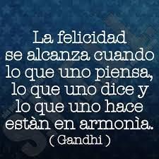En un rango actual, eso de diferenciar que es el vivir del simple existir, cada vez es más lejano, las personas solo saben levantarse de sus camas por obligación, comer por obligación, ir a trabajar por obligación y llenar el vació de horas.
Y fuera de que no saben diferenciarlo todavía buscan un concepto de felicidad, claro no dado por ellos, impartido por entes totalmente externos, y aún más esperando tener libertad, libertad de que, si ni elegir despertarse o no ya es su elección y si tampoco disfrutan haciéndolo, son solo máquinas que existen.
Entrando en materia quiero explicar, lo acabado de decir, puede que este conjunto de palabras el vivir y el existir tengan un significado parecido, existir significa tener vida, y vivir también el estar vivo. Pero si vamos más allá, tomando como punto de partida en cómo se encuentra la gran parte de nuestra comunidad actual tenemos una mirada totalmente distinta.
Existir es estar posicionado en este mundo, en este planeta tierra de una manera tan simple y tan efímera, es el levantarse sin una intención y el acostarse sin satisfacción, pasar los días de la misma manera cada uno solo para cumplir con un ciclo de vida; pero ahora el vivir es algo distinto aunque su terminología sea la misma, el levantarse con ánimos, de agradecer estar vivos, el mirar por la ventada y deslumbrar un nuevo día, hay tantas formas de explicar que es el verdadero vivir, el sentir que tu sangre realmente fluye y que cada centímetro de tu cuerpo vibra con cada decisión, cada situación, cada palabra, cada sonido, cada sabor; en esas cosas nuevas que probamos, en esas nuevas experiencias, en los riesgos que tomamos, si no es así para que nos llamamos seres humanos, porque seriamos los más altos en la cadena alimenticia, si muchos se comportan como simples animales que actúan por instinto y otros hasta como plantas que cumplen su ciclo en este mundo y se evaporan.
Ahora cómo hacerlo de la mejor manea y alcanzar la felicidad, siendo esta totalmente relativa, ya que la felicidad verdadera se encuentra en cada uno de nosotros de una manera totalmente distinta y única, mientras que unos ven “felicidad” en cosas pasajeras, hay quienes quieren paz o amor. Tengo por certero que la mejor manera de hallar la felicidad es escuchando nuestro corazón, siguiendo la razón, y manteniéndonos firmes a nuestra libertad, no libertinaje, nuestra libertad raya desde el momento que afecta la de otros. El ser feliz no es un estado permanente, pero si podemos buscar una paz interna incomparable, que sin importar las situaciones que vivamos ninguna emoción o situación o nos va a controlar, solo va a ser parte de nuestra vida y de un momento más.
La felicidad es una búsqueda constante, en la que podremos pasar toda la vida y aún así nunca conocer en definitiva un concepto propio de felicidad, pero hallaremos la felicidad manteniéndonos en ese camino a su encuentro sin obsesión, ese es el vivir, estando presentes todos los días por hacerlos lo mejor que podemos, pero no fijarnos en que es lo único porque nos perderemos de disfrutar de nuestros días de la mejor manera al final de cuentas, dicen que el que busca encuentra, pero el que se obsesiona, sin detenerse a buscar, a investigar, a indagar y sobre todo a descansar, nunca encontrará nada, puede que esté buscando en tierra muerta y por más que escarbe nunca encontrará nada.
Pero hay algo claro, cada quien es libre de ser feliz, pero libertad no es tener el derecho de hacer o no hacer, es tener la capacidad de luchar por lo que queremos, nadie nace libre, se revela ante quienes lo oprimen y decide ser feliz.
El para qué estamos en este mundo, en realidad depende de nosotros y que hacemos con esto es nuestra responsabilidad, muchos culpamos del mal vivir a otros pero no luchamos por cómo queremos vivir. Somos eso, una decisión, ahora tú decides ser libre, ¿tú decides existir o vivir?
AUTORA: YERALDINE VALERIA PORRAS
COMO VIVIR BIEN, VIVIR MEJOR, Y LOGRAR OBTENER LA FELICIDAD
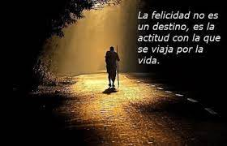Todos a lo largo de nuestra vida nos hemos preguntado cuál es la verdadera felicidad, la mayoría de respuestas coinciden en que es el dinero, la familia, la salud entre otras, pero, ¿es esto el verdadero motivo de nuestra felicidad? ¿quién nos puede asegurar esto? ¿es solo un motivo o son varios?
Pues bien, para poder hablar de felicidad necesitamos saber que esta es una emoción que se produce en un ser consciente cuando llega a un momento de conformación, bienestar o ha conseguido ciertos objetivos que le realizan como individuo.
Teniendo como referente lo anterior, podríamos decir que es deber de cada individuo crear su propia felicidad, basándonos en una serie de parámetros para tener un equilibrio, estos serian la moral y la ética, ya que estas nos ayudaran a ser felices y tener una mejor vida sin necesidad de afectar a las personas de nuestro ambiente, ya sea laboral, familiar entre otros.
Ya sabiendo que somos nosotros mismos los encargados de ser felices podemos decir también que seremos los encargados de crear nuestra propia fuente de felicidad, es decir, no buscar solo un pequeño momento, sino que aspirar a más. Con todo esto me refiero a que no solo debemos tener un motivo de felicidad si no podemos tener muchos, evitando así depender de alguno.
Cada momento será algo único de cada persona, y así poco a poco lograremos edificar un futuro lleno de buenos momentos y felicidad, logrando así una mejor vida y una estabilidad segura y completa.
Aunque todo esto que menciono parece muy fácil, no lo es, pues cada quien será responsable de experimentar cosas las cuales pueden provocar emociones positivas a su vida, y esto no se lograra en el primer intento, incluso hay personas que dicen no haber encontrado la felicidad en toda su vida, lo cual es algo negativo ya que, si nunca logramos hallarla, jamás seremos unas personas completas, y nos gastaremos toda nuestra existencia lamentándonos por no dedicarnos a buscar la felicidad.
Con todo lo anterior podemos concluir varias cosas: La primera seria que cada individuo tiene la libertad de buscar y elegir cuál será su motivo de felicidad, haciendo esto realidad sin lastimar el entorno que nos rodea. La segunda es que la felicidad es mas que un simple momento feliz, es un conjunto de recuerdos y actividades que pueden llevarnos a una actitud plena y adecuada.
Por ende, para vivir bien tendremos que alcanzar la felicidad, lo cual no será fácil pues se deberá experimentar múltiples veces y en aquellos intentos es probable que fracasemos o nos tropecemos, pero esto no deberá ser un impedimento para lograr nuestro objetivo, el cual es la felicidad.
AUTORA: NAZLY KARINA SANDOVAL LANCHEROS.
¿LA FELICIDAD ES UNA PERSONA?
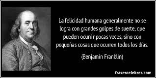En la actualidad se escuchan de aquí para allá conceptos como el amor propio, el autoestima e incluso la responsabilidad afectiva, todos acompañados de movimientos como el muy conocido “body posivite” que plantea una sociedad que acepte todo tipo de cuerpos sin juzgarlos, bajo argumentos como “cada quien tiene espejo en su casa”, pero, lo que une todos estos conceptos es su fin, es decir, todos están orientados a que seamos más felices y podamos vivir en paz, pero entonces ¿la felicidad esta orientada hacia una sola persona o a una sociedad entera que se adapte a ciertos parámetros para que sea “aceptable”?
Empecemos por ver la felicidad desde dos puntos de vista, el hedonismo, nos presenta la felicidad como la eterna búsqueda de placer, cosa que hoy en día ha sido malinterpretada por una sociedad que ve en el tener su felicidad, en placeres tan corrientes y pasajeros como el dinero y los lujos, caso muy contrario a la esencia de la corriente hedonista que nos habla de un placer espiritual, que nos represente un estado entero y estable de paz y una total ausencia de dolor. Aristóteles en cambio nos plantea la felicidad como el bien común, pues cada individuo nace con un rol dentro de la sociedad y a este le es imposible realizarse como persona sin la sociedad.
El amor propio o la autoestima es un autoconcepto que construimos sobre nosotros mismos a lo largo de nuestra vida, como me veo a mi mismo y que tanto me aprecio;puede verse afectada por diversos factores externos como la discriminación, el bullying e incluso los estilos de crianza de los padres, quienes han sufrido de esto son mucho más propensos a desarrollar baja autoestima.
Y es que en el papel todo es bonito, pero si miramos la realidad, nos vamos a dar cuenta de que no es así, amarse y aceptarse uno mismo cuesta muchísimas lágrimas, noches en vela sintiéndose insuficiente, reclamos y palabras de odio hacia uno mismo, cuesta aceptar que uno no podrá verse como lo desea, cuesta desaprender tantos comportamientos limitantes, cuesta aceptar defectos y las cosas que uno no puede cambiar, cuesta aprender a poner límites, entender que estar en lugares equivocados nos hace sentir menos y cuesta mucho más dejar de lado las inseguridades y los traumas de cada uno.
La felicidad entonces no es más que un largo proceso que se desarrolla a lo largo de nuestra vida y es que para ser felices necesitamos no de una sociedad que nos acepte sino de que nosotros mismos lo hagamos y seamos el cambio que queremos ver, por eso mismo, la felicidad es una persona, por eso mismo, la felicidad soy yo, somos nosotros.
AUTOR: WENDY YURANI MENDEZ SILVA
"UNA CARRERA ETERNA DE LA FELICIDAD"
La felicidad, un concepto que muchas veces ni sabemos cómo definir, varia para todas las personas, algo que hace feliz a una persona que puede hacer miserable a otra. Los seres humanos basados nuestra existencia en perseguir esta felicidad, una hermosa pintura que anhelamos desde pequeños.Pero.¿sabemos que es la felicidad?¿sabemos como alcanzarla?
Debemos empezar presentando la imagen de una persona feliz que se nos muestra desde que somos pequeños, personas rodeadas de dinero, personas que tienen poder, personas que se han "realizado" económicamente, empezamos a creer que trabajando duro por el resto de nuestra vida para conseguir dinero y comodidad seremos felices. Esta imagen se nos es impuesta por una sociedad capitalista, una sociedad que nos quiere consumir,¿en realidad se puede llenar el vacío dentro de nosotros con cosas materiales? Algunas personas lo hacen y dicen que son completamente felices, talvez esto es solo una máscara o talvez no. Es imposible negar que, con dinero vamos a tener una buena vida, después de todo, en la actualidad el que tiene más poder es el que gana, pero estamos persiguiendo una felicidad que es de alguna forma forzosa y jamás estará completa, porque siempre vamos a necesitar más y más. Si nos alejamos de este ideal, es decir, dejar ir lo material, nos empezamos a basar más en un pensamiento más libre, nos desligamos de todo lo mundado, huir del dolor y buscar los placeres, y en medio de esta búsqueda aceptar que nada es eterno y que muchas veces las buenas experiencias no se repetirán
Ahora hablemos del completo opuesto de la felicidad capitalista, el apreciar la simpleza de las cosas, disfrutar de nuestra existencia, aunque sea complicado apreciar lo que tenemos, podríamos decir que es posible encontrar la felicidad cuando aprendemos a apreciar la belleza de las pequeñas cosas, ser conscientes de que lo que experimetamos diariamente nadie más lo va a experimentar, apreciar esa individualidad.
Muchas personas, especialmente las personas que son fieles a alguna religión, creen que la felicidad terrenal ex algo inexistente, que es algo que se alcanza después de la muerte, después de trascender. Muchas personas intentan encontrar la felicidad en el común, la felicidad del prójimo, aunque esta felicidad, pór nuestra naturaleza individualista, se vuele algo más personal, cada persona encuentra su felicidad, cada persona lucha por su felicidad propia, incluso si esta felicidad se contruyó haciendo a otras personas infelices, somos egoístas, no somos conscientes de como las acciones que realicemos para alcanzar nuestra felicidad, afectan la felicidad colectiva, para proteger esra felicidad del común debemos analizar si estamos siguiendo los lineamientos de obrar basándonos en lo que queremosque se convierta en ley, en otras palabras, que debo tratar al prójimos como quiero que me traten.
Pero¿es posible que no sea egoísta? Se dice que en la naturaleza del holbre se encuentra el egoísmo, ¿es esto cierto o es otra imposición de la sociedad? lo anterior nos lleva a pensar que, si volvemos a nuestras bases, a nuestra naturaleza, podremos encontrar la felicidad vasándonos en el cinismo, nuestro alrededor nos crea expectativas sobre los demás y sobre nosotros mismos que son irreales e innecesarias, haciendo un ataque directo hacia la sociedad y hacía lo que esta nos imponga, talvez logremos encontrar la felicidad pura.
Finalmente, si se sugiere que todas nuestras acciones tienen una finalidad, está siendo el alcanzar la felicidad, seguimos el pensamiento de que la felicidad se encuentra en el dominio propio, en el desarrollar lo que nos hace nosotros, en construirnos a nosotros mismos, en el saber de nuestra mayor virtud es pensar, justo como el pensamiento de Aristóteles. Esto pareciéndose un poco al pensmaiento Socrático que sugiere que el desarrollo de saber está por encima de todo lo material, que el autoconomiento nos hace felices, "el saber es felicidad".
La felicidad y como alcanzarla es un terreno muy amplio, se han presentado diferentes maneras de como las personas experimentan la felicidad, pero, ¿basados en esto podemos decidir cuál es la forma correcta de ser feliz o incluso si en realidad somos felices? Talvez la felicidad ni siquiera exista, pero aun así segumos presiguiéndola, esta podría ser la verdadera naturaleza, la eterna persecución de la felicidad, del bienestar, puede que nuestra vida se basa en alcanzar esta ilusión de felicidad o talvez es esta persecución constante es lo que nos hace felices, siguiendo esta lógica, para vivir nuestra vida correctamente, debemos seguir nuestro propio camino hacia nuestra felicidad, incluso creando nuestro propio concepto de felicidad.
AUTOR: JOSÉ FERNANDO PRADA DIAZ
¿ES POSIBLE SER FELIZ?
Todos sabemos que es mucho más fácil morir que vivir, por eso cada día nos preguntamos qué hacemos para sentirnos bien, o poder llenar ese vació que tenemos en nuestro diario vivir. Con esto quiero plantear que como especies animales facultadas para razonar, pensar y ser conscientes de nuestra existencia nos vemos obligados a realizar acciones para llenar ese vació existencial.
En tal sentido, nos hemos preguntado ¿Por qué vivimos? ¿Cuál es el propósito de nuestra vida?, preguntas tan fáciles de formular, sin embargo, tienen cierto grado de dificulta de responder, dependiendo de su receptor, cada uno puede tener su propia teoría o quizás un propósito y es muy subjetivo, pero lo único que sabemos que es algo cierto, es que nosotros tenemos un propósito, y que ese propósito no puede ser nada, porque la nada no existe.
Bueno, ahora vamos a filosofar un rato con relación a la nada. Hay veces que nos preguntamos que estamos haciendo y respondemos que nada, o quizás ha pasado por nuestra mente responder eso, o creer que de verdad existe.
Vamos hacer un pequeño experimento, cierra los ojos por cierto lapsus temporal (30 segundos, si, no sigas leyendo…). Bueno ya que lo hiciste, puedes ver que no existe la nada, quizás cuando cerraste los ojos te llego un recuerdo y quizás viste chispas o unas pequeñas luces, o quizás todo negro con muchos puntos no específicos. Bueno a eso es lo que yo quiero llegar y es que no existe la nada, porque cuando piensas en ella y la buscas y dices – LA ENCONTRE- , ella ya no existe porque ya se convierte en algo, ¿pero como es posible que suceda esto?, nuestra vida se encuentra en la nada, porque antes de nacer no somos nada y cuando morimos tampoco, por eso el ser humano no puede pensar ni crear la nada porque somos seres vivos, y algo vivo no puede ser nada, tiene por ende que ser algo… solo nos queda pensar y divagar por nuestras mentes que es aquello.
Con todo esto quiero irme acercando al tema, el cual da mucho de qué hablar y es la felicidad. Pero en si ¿que entendemos por ella?, ¿es algo inherente al ser humano, o es solo una construcción social que se ha ido sosteniendo en el tiempo? Bueno no vamos a discutir sobre eso, lo que si sé y es que la felicidad es aquello que queremos tener todos los seres humanos, es como una utopía que queremos que sea realidad, y quizás en algunos momentos la alcancemos, pero sabemos que va a salir un nuevo problema, que nos impida estar al 100% felices, a esto lo llamo la anti-ética-moral(si, suena raro lo sé), sin embargo no es nada mas que una causa y debe de haber un efecto, si, este es la tristeza, no se si te ha pasado y es que cuando sentimos que todo lo que hemos hecho o estamos haciendo va a la perfección como nosotros lo queremos, ¿allá a lo último sale un problema?, es de los más feo que le puede pasar a uno porque nosotros metemos en nuestra mente que wao, va a ser genial el día o aquel proyecto, pero bueno sale un pequeño problema…
Si, así es la vida, llena de incertidumbres, por eso no todo lo que queremos va a salirnos bien, tenemos que esforzarnos mucho. Ser feliz también tiene que ver con las cosas que hacemos a diario, como el placer. Ser feliz, desde y en el pensamiento filosófico, ha sido una cuestión vinculada al problema moral, como hemos visto anteriormente en las clases y los videos foros, porque está ligada a las costumbres, al hacer, al vivir con otros. El filósofo se debate entre una propuesta hedonista y otra eudemonista, en la que el hombre busca la felicidad en el placer o encuentra la felicidad en el ejercicio de la virtud.
“La felicidad tiene que ver con el carácter del pacto social al que el hombre se sujeta; con las leyes que limitan el poder del gobernante, con la defensa de la propiedad privada y las libertades públicas.
¿Por qué los hombres que viven en completa libertad en el estado de naturaleza deciden resignarla para que otro los gobierne? El “miedo” es el motor del contrato en el que los ciudadanos delegan el poder a quien los organiza, los vigila, los castiga.”
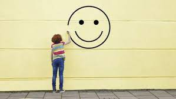El sujeto ya no encuentra redención en los templos y en las iglesias, se redime en los centros comerciales, en el consumo. Dime qué consumes y te diré quién eres. Dime qué puedes comprar y te diré qué tipo de felicidad puedes obtener. Las denominadas “patologías de consumo”, relacionadas con la dietética, síntomas tales como la anorexia y la bulimia, muestran en parte esta dificultad del proceso identitario en una sociedad de modo de producción capitalista. El hombre no encuentra en el mundo el resultado de su obra, de su acción; se encuentra enajenado y en esa “ajenidad” se busca en un espejo imaginario de sí mismo.
Aristóteles organiza su propuesta ética en torno al problema de la felicidad, su punto de partida es la convicción que para todos los hombres, en todos los oficios y ocupaciones, lo común es perseguir un fin; en el caso especial de la ética, ese fin que se pretende alcanzar es la felicidad.
Pero debe, entonces, dedicar una buena parte de su propuesta moral a la definición de ese fin, de ese bien, que denominamos “felicidad”. El hombre bueno para Aristóteles, el hombre feliz, es un virtuoso; y la virtud es posible si los seres humanos practican hábitos buenos.
En ese camino hacia la felicidad, Aristóteles describe en los términos de “una teoría del equilibrio”, el afán por evaluar con el auxilio del entendimiento la opción más correcta; esto es, el justo medio entre dos extremos.
El hombre feliz, es profundamente racional, prudente, reflexivo; alguien capaz de tomarse el tiempo necesario para medir las consecuencias de su acción. Antes de actuar debe aprender para decidir, para optar, para elegir lo bueno, lo correcto; sus armas son el logos (raciocinio) el ethos (conciencia moral) y el habitus (lo que se adquiere).
Actuar bien, moralmente bien, éticamente bien, es hacerlo teniendo en cuenta el “bien común “, el bien de todos; ya que somos animales racionales, sociales y políticos. Nuestra naturaleza nos provee de la posibilidad de pensar y actuar conforme a esa razón; pero es en la polis donde se adquieren los buenos hábitos de convivencia…
Para alcanzar la felicidad hay que practicar hábitos buenos, justos, equitativos; esos hábitos están sostenidos por actos voluntarios. Los hombres desean voluntariamente el bien común y por ende, persiguen la felicidad a sabiendas que ésta sólo se logra con esfuerzo, con el ánimo templado, con valor. En ese camino hacia la virtud, los seres humanos se dirigen hacia la felicidad. Nadie en su “sano juicio” puede actuar mal, ni prefiere la injusticia, el descontrol o la violencia.
AUTOR: DANIEL GÓMEZ MACHADO
"LA FELICIDAD HUMANA"
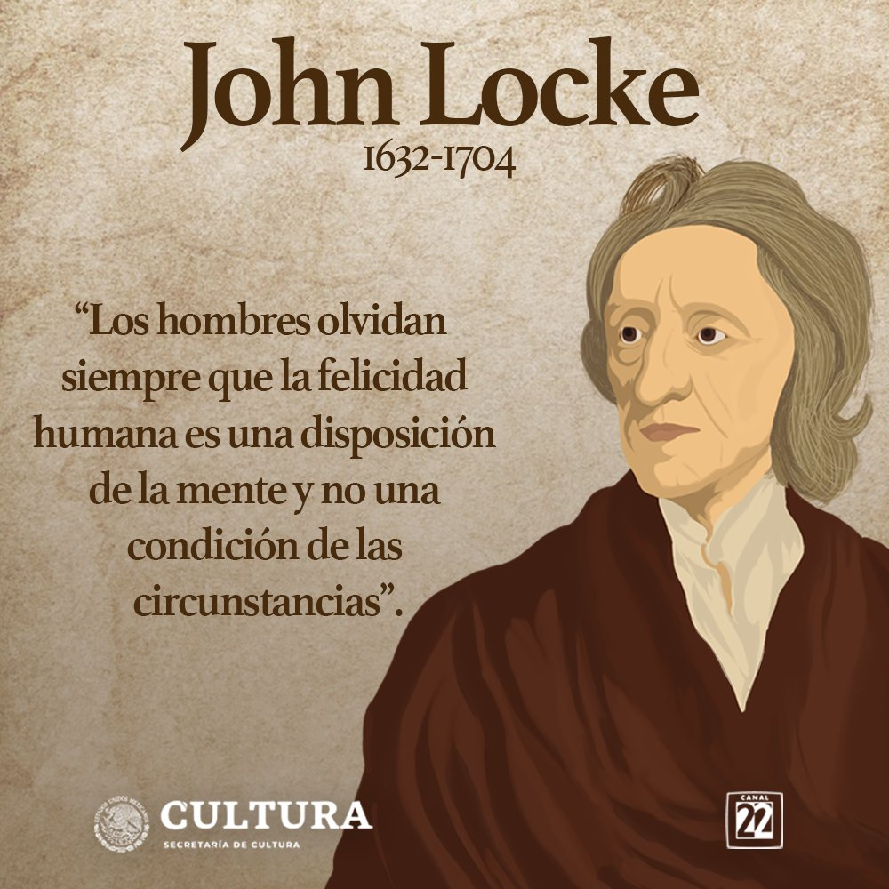La felicidad es una palabra muy complejo de definir, ya que todas la personas no somos iguales y por lo tanto somos felices de distintos motivos, y todo esto nos da a conocer que la felicidad depende de la percepción que cada persona o ser humano respecto a distintas cosas o situaciones, además en algunas veces pensamos que algo nos va a satisfacer pero después de un tiempo nos damos cuenta de que aquello no nos genero felicidad si no que fue algo pasajero, la felicidad es concepto subjetivo porque depende individualmente. La felicidad es todo lo que queremos los humanos, pero muy pocos logran conseguirla ya pueden ser por problemas o situaciones tristes que nos impide tener la felicidad que tanto anhelamos.
Mi idea sobre la felicidad es hacer cosas que ame, por ejempló, me gusta practicar deporte por lo tanto lo hago todos los días y disfruto de ello, pero si una persona trabaja o hace cosas que le toca hacer por presión claramente no estará feliz de hacerlas y desde allí comienza una vida infeliz en sigo mismo, por eso a veces debemos de dejarnos llevar por los sentimientos y no de las opiniones de los demás, si tenemos pensamientos felices nuestra vida será feliz y si por lo contrario pensamos triste nuestra vida será infeliz. La vida esta llena de alegrías, llanto, tristezas, odio, risa y amor, puede ser que alguna vez el ser humano alcance su felicidad cuando se acepte a si mismo tal como es, ya se por todo lo que le ha dado la vida, su salud física y mental además cuando sabe ganar y perder.
La felicidad no es algo que se encuentre por el simple destino, aunque yo quisiera ser feliz y lo quiero desde los más lejos de mi alma, yo no creo que la felicidad completa exista ya que en esta vida debemos luchar y combatir a aquellos obstáculos que nos genera la vida, pero a veces no nos saldrán como lo deseamos. Pero si tenemos unos sueños y metas que nos generan felicidad debemos ir en busca de ellos así la vida nos de golpes debemos seguir adelante hasta logar cumplir aquello que nos generas felicidad porque de si no lo contrario viviremos infelices el resto de nuestra vida.
Algunas personas encuentran la felicidad por medio de el dinero y objetos materiales, ya sea que a ellos les genere felicidad pero para mi eso es solo un gusto y una necesidad pasajera, ya que las personas poderosas buscan la manera de esclavizar a los humanos de su felicidad ya sea por lo material y entre otras cosas porque le hacen crear una necesidad y ellos podérsela complacer y en algunos casos las personas son infelices por estas situaciones así que para mi lo material no lo es todo si una pequeña parte de nuestra propia felicidad. debemos realizar las cosas que nos genera felicidad asi a los demás no les guste, desde que nosotros mismos nos sentamos feliz el resto es aparte, además seamos feliz con nuestro interior
Para mi no hay necesidad de centrarse en las emociones negativas. Es mejor durar en relaciones felices y sanas con personas que merecen estar en tu vida, porque saben lo importante que son las personas. A veces Las personas necesitan la compañía de otros para disipar su soledad, porque la soledad a menudo hace que las personas entretengan cosas negativas como problemas y dolor. Por lo tanto las personas deben buscar a extraños que entren en sus vidas y se acerquen a ellos, en ocasiones, no todas las personas tienen buenas intenciones. Muchas personas se aprovechan de la inocencia de los demás y asi a veces acaban con la felicidad de la persona y la transforma en odio y esa persona hace lo mismo con otra y así sucesivamente hasta generar un numero muy grande de personas infelices, sin embargo me hago una pregunta. ¿vale la pena creer en la felicidad?
En conclusión, la única forma de alcanzar la felicidad es por medio de realizar las cosas que a cada persona ame de corazón a la hora de realizarla, las cuales permitirán aumentar la percepción de emociones positivas. Se debe disfrutar el presente, ver con esperanza el futuro por medio de nuestras acciones positivas, y siempre dedicar tiempo para actividades que nos generen mucha felicidad en nuestra vida, en si la felicidad es individual de cada persona, De hecho, la mayoría de la gente tiene que trabajar duro durante mucho tiempo para alcanzar la felicidad pero como lo he dicho la felicidad no se encuentra si no se busca y se lucha, por eso es difícil de conseguir, solo les digo que nunca abandonen sus sueños y metas si logras imaginarlos puedes lograrlos nunca desmayes hasta lograr aquello que te genera felicidad.
AUTOR: LUIS ALEJANDRO ALBORNOZ CALDERON.
LO QUE SE SABE DE LA FELICIDAD DE LAS PERSONAS
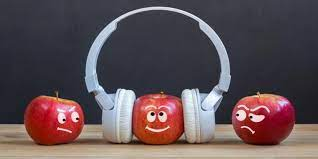Cuando hablamos de felicidad la gente o bueno la mayoría de personas en la actualidad piensan en algo pasajero, algo que las personas de hace unas cuantas décadas no verían así… Hoy en día vemos que la gente se toma algo o todo como pasajero prefieren tomar un camino fácil o eso que más los beneficia de manera rápida sin tomar o querer responder por sus actos lo ven todo con una facilidad la cual solo es momentánea la cual los carcome hasta dejarlos vacíos con el pasar de los años sin ninguna motivación mientras que unas personas de hace algunos años buscaban algo más estable y duradero de ahí la frase “Dos cosas contribuyen a avanzar: ir más deprisa que los otros, o ir por el buen camino “lo cual nos da a entender que los progresos se consiguen mediante el esfuerzo. Ir más deprisa que los demás puede parecer que nos hace avanzar, pero puede conducirnos por una vía que nos lleve al engaño. Por otro lado, avanzar meticulosamente dudando de la realidad permite que las conclusiones que acabemos extrayendo sean probablemente más ciertas.
En otras palabras, es más satisfactorio lograr algo mediante esfuerzo y es más fácil llegar a la felicidad si es que se logra mantener aquel camino por el que uno sacrifica tiempo de vida y no hacerlo por algo temporal como el dinero y que tal cosa como eso los llevara a una felicidad eterna, para Sócrates la felicidad o aquel punto en el que se podía llegar a lograr era el conocimiento pues esta nunca se llegaba a acabar y se podía seguir explotando sin límites y aun seguimos usando esos conocimientos y mejorándolos como secuelas de algunas de sus enseñanzas las cual prevalecen. Para Nietzsche era bueno un poco de todo experimentar todo lo que nos da la vida pero con moderación y si miramos bien la doctrina religiosa se parece mucho a las teorías de Sócrates sobre la felicidad solo que a esta última le cambian la palabra de conocimiento por Dios “aquel al que todos los buenos cristianos adoramos” diría un fiel creyente a lo largo de la vida percibimos que todo por lo que pasamos de una manera u otra nos deja secuelas de lo que es ser feliz hasta aquellas veces por las que la gente llora.
Aquella persona que cuando nos miramos al espejo decimos ese soy yo pero de hace 4, 5, 6, 7, 30 años pues yo soy todos ellos y a la vez fui uno cada uno con distintos recuerdos, experiencias y al verse al espejo se alegra de todo lo que ha vivido de aquel camino que por tanta frustración, desmotivación, perseverancia y diciplina surgió por eso una persona adulta diría que la felicidad es hacer lo que le gusta a uno pues no habría otra forma de lograr aquello que anhelamos como cumplir nuestras metas y luego plantearnos nuevas trae una satisfacción que cuando un joven interesado en el tema logra heredar esos pensamientos y visualizarse para lograr aquel camino que podrá recorrer y sonreír atemorizado, alegre, ansioso por todo lo que va a vivir pues no es aquello tener 14 años a tener 18 y ver el mundo de distintas formas cada vez con más y más conocimientos. A la gente le pasa que ve algunas cosas que no sabían cuando tenían tantos años y que cuando vuelven a ver dicen “yo si era como idiota” y proceden a romperse en una risa pues se acordaron de todo lo que pasaron para allegar hay.
En cambio, si vemos desde un punto de vista más afín con una persona que logro su camino mediante el pasajero esta sin duda alguna vive muchas experiencias “ claro “ llegan a creer que están viviendo la vida por un tiempo sin ver lo que los rodea hasta tienen el descaro de mentir a sus propios progenitores y decirles que todo anda bien así atrayéndose a sí mismos a una burbuja mental que los rompe a ellos mismos y a los que los rodean pues puede que aquellos que los rodean sientan que no avanzan tan rápido como ellos y con respecto a los que los criaron sentirse un exceso de orgullo y pensar que estos últimos con gran esfuerzo lograron eso que los llevo a la felicidad momentánea, Mas tarde podemos apreciar que esa misma gente cae más rápido llevando un camino rápido pero peligroso pues lo que hacen no fue si no momentáneo estos llegan a caer tarde o temprano, aquel que escoge entre lo pasajero solo ve a lo que tiene que llegar omitiendo todo y eso le causara problemas en el camino a lograr la felicidad pues este puede llegar a alcanzar su objetivo pero no a adquirir las experiencias ni el conocimiento por eso muchas veces vemos a profesionales sin conocer nada de lo que aprendieron pero llegaron hasta hay pues es fácil apreciar la diferencia entre alguien que es bueno por que logra resplandecer un brillo que llama a la gente a su alrededor que la admira que cuando vemos una persona que parece una mala influencia y que desperdicia todo su potencial todo aquello que pudo llegar a ser sintiéndose triste por si dentro viendo que pudo haber hecho otras cosas y lograr algo estable o tener pensamientos pero logre mis metas pero a que costo no soy feliz tengo todo lo necesario para vivir y aun así siento un vacío por dentro que me está carcomiendo y por más que la gente se acerque a ellos no logran sanar su problema interior Impidiéndoles el camino a la felicidad por causas que ellos mismos provocaron.
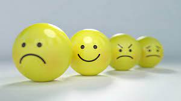Por ultimo están las personas que llegaron a ser felices o estaban en un mundo de felicidad absoluta tenían todo, sin embargo estas tienen un alma muy sensible o como lo diría alguien normal “sentimientos” pues estas pueden entrar o a la tristeza absoluta o recomponerse y seguir adelante con o sin ayuda pero les es difícil pues una vez sucedido un caso o hecho pueden darse a morir o levantarse entre lágrimas y remordimientos después de haber sido abolidos hasta el sufrimiento seguir adelante sin miedo a lo que venga y con sus sueños, metas claras claro estas no tienen algún talento o algo que los haga destacar… Tal vez su talento sea levantarse una y otra vez con una diciplina y mentalidad que no los deja rendirse en el caso que sean capaz de superar sus hechos, pero si estas no deciden levantarse terminan mal y dejándose llevar por aquello que les impide salir en sí mismos llenándose con obstáculos y impidiéndole totalmente de la felicidad.
Incluso en los sueños se puede lograr sentir la felicidad es algo que no sabemos como describirlo con palabras convencionales o hasta el momento que no hemos logrado dejar clara pues lo que lo hace feliz a uno no hace feliz a otro ni a los animales pues estos tienen una forma distinta de pensar a nosotros sienten todo lo que les rodea pueden sentirse mal, cuando alguien les hace falta sentirse bien cuando la persona vuelve y cuando están con dicha persona son felices comiendo o haciendo lo que les gusta se podría decir que estos por si mismos son las criaturas que mas saben que los hace felices no hacen nada pero son de cierta forma conscientes de sus acciones y así como ellos sonríen nosotros también igual que en los sueños nosotros como ellos saben lo que esta pasando y si los hace feliz, les da miedo o es común siempre la felicidad va estar presente en muchos aspectos de la vida.
Para finalizar la felicidad depende de los estados de ánimo y de las personas como estas sean capaces de lograr superar sus sentimientos y no ser tan avaricioso pues si no, es difícil capaz de lograr alcanzar la felicidad la cual les percibe captar cosas que no se ven a simple vista pues al lograr el conocimiento de lo que uno ha vivido es capaz de sonreír y pasar buenos momentos poniendo de su parte claro no se puede llegar a ser feliz por completo pero si puede lograr un buen estado de felicidad durante la vida ya sea la persona haya pasado por muchas cosas siempre se lograra algo de felicidad tarde o temprano esta logra surgir desde distintas situaciones hasta de la tristeza de recuerdos de ver todo lo que nos rodea pero siempre se va a encontrar en el conocimiento pues ya sea un sordo puede sentirla o mudo puede escuchar entender lo que dicen por sus propios métodos y formas de percibir lo que logran captar sus sentidos y mente , hasta los animales logran distinguir lo que los hace felices o tristes pero si en realidad se quiere buscar un significado de felicidad seria vivir y no el conocimiento pues como tal si alguien no está vivo o bueno este ser tenga conciencia de lo que hace no podrá lograr ser feliz u experimentar cosas percibir cambios sentir el aire en el cuerpo o sensaciones que logren hacerlo sentirse vivo y conforme con si mismo “cogito ergo sum” pienso luego existo dijo descartes aunque uno no crea los animales piensan y de alguna manera ellos saben que están vivos así como son capaces de reconocer a los que los domestican, también así como nosotros pensamos cualquier persona o animal es capaz de sentir l a felicidad pero primero debe existir y vivir la vida.